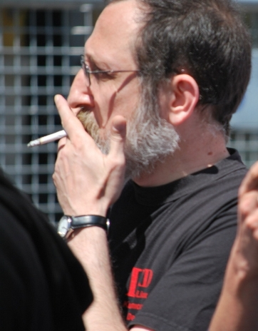

marenostrum (K. Deniz Ogut)
About
http://marenostrum.blogsome.com
https://launchpad.net/~kdenizogut
http://tuxweet.linux.org.tr/marenostrum
https://github.com/marenostrum
Contact
A few photos
May Day. 1 May 2010, Istanbul. Linux Users Association (Turkey) members
marching.
Banner: “Free Software for a Free World”

Me in the May Day rally
Linux Users Association (Turkey) members on Bosphorus Bridge during the public Fun Run held afterwards 32nd
Intercontinental Istanbul Eurasia Marathon. 17 October 2010.
Me on the left.
Me in Eurasia Marathon